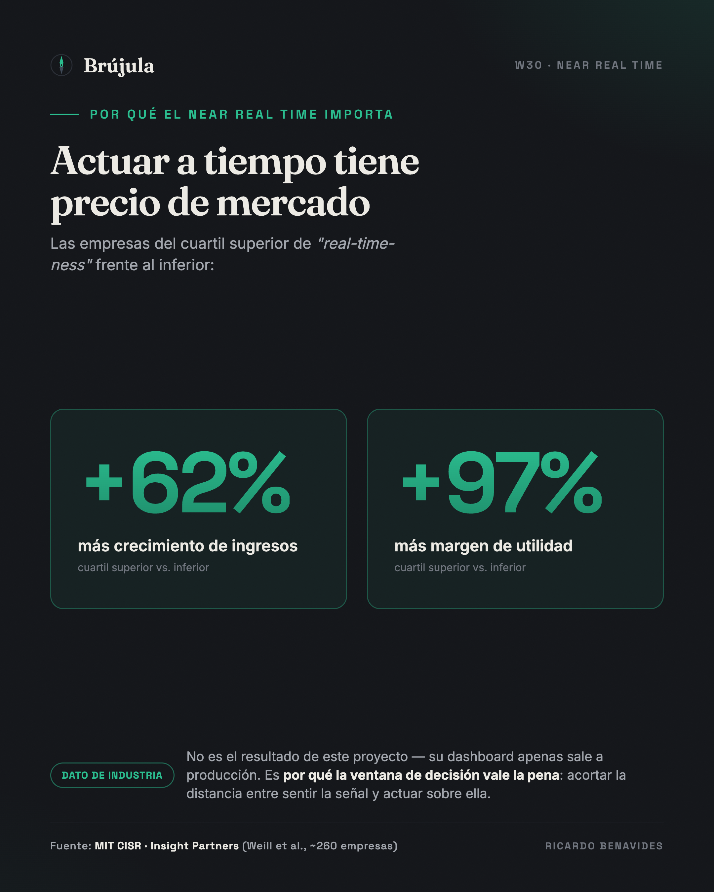
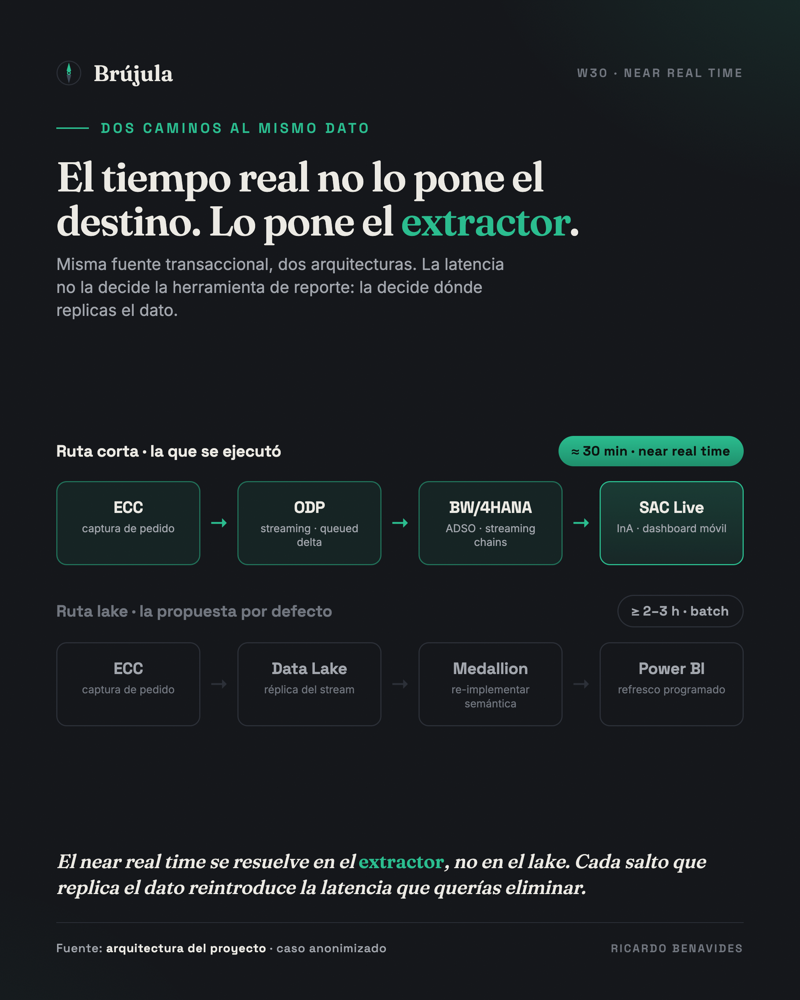

Cuando llegué al proyecto, la arquitectura ya estaba decidida: llevar los datos a un lakehouse y reportar en la herramienta de BI corporativa. Es la respuesta por defecto de 2026, y en el papel cuesta discutirla — democratización, escalabilidad, todo en un solo lugar. Pero el requisito real la puso a prueba en la primera reunión. El negocio no quería otro reporte. Quería actuar durante el día, no enterarse al día siguiente.
El equipo de preventa necesitaba ver, en campo y desde el teléfono, cómo iba la colocación de pedidos cada media hora: cuánto volumen llevaban contra el mismo día del año pasado, qué cobertura de clientes tenían contra su plan de visitas, y dónde había una brecha contra la meta que exigiera una acción táctica antes de que terminara la jornada.
El estado previo sí tiene números, y vale la pena anclarlos porque son lo único medido hasta ahora — el punto de partida, no el resultado. La información se sacaba de un reporte de preventa que se armaba a mano, con solo tres cortes al día y alrededor de quince horas-persona por semana de trabajo manual, con los defectos propios de ese proceso: datos que ya nacían viejos y errores de captura. Y el punto de comparación "moderno" que ya existía era, irónicamente, un reporte en la misma herramienta de BI que la dirección proponía como destino. La pregunta de negocio no era "¿cómo me fue ayer?", era "¿alcanzo la meta hoy, y qué muevo ahora si no?".
Que esa pregunta importe no es una intuición. La investigación de MIT CISR con Insight Partners sobre real-time businesses encontró que las empresas en el cuartil superior de "real-time-ness" tuvieron 62% más crecimiento de ingresos y 97% más margen de utilidad que las del cuartil inferior — un premio que viene, literalmente, de acortar la distancia entre sentir una señal y actuar sobre ella. Ese es el dato de la industria, no el mío: sería deshonesto colgarme ese número. El dashboard apenas está por liberarse a producción y el impacto real —cuántos pedidos bloqueados se rescatan el mismo día, cuánto se mueve la cobertura— está por medirse. Lo que sí puedo defender hoy, antes de la primera medición, es la decisión de arquitectura. Y ahí la ruta "moderna" chocó con una verdad incómoda: para ese near real time, meter un data lake en medio no agregaba capacidad. Agregaba latencia.

La distinción que casi nadie hace explícita
Conviene ser preciso, porque es fácil caricaturizar el argumento. No estoy diciendo que un lakehouse no pueda hacer streaming — puede. Lo que digo es más fino, y es la tesis de esta pieza:
Cuando el dato transaccional y su lógica de negocio ya viven gobernados dentro de SAP, el camino más corto para monitoreo operativo en tiempo casi real es traer la query a donde vive la verdad — no mover la verdad para alcanzarla.
Esto tiene nombre en arquitectura: data gravity. El principio, acuñado por Dave McCrory en 2010, dice que mientras más grande y compleja es una masa de datos, más caro y lento es moverla — así que lo económico es acercar el cómputo al dato, no el dato al cómputo. No es teoría de pizarrón: la propia guía reciente de TechTarget sobre eficiencia de data centers lo pone en términos operativos — "coloca los workloads cerca del dato, especialmente para aplicaciones latency-sensitive y en tiempo real". Y AtScale, en su glosario del tema, es todavía más directo: la performance de las queries se degrada cuando corren sobre datos replicados o ruteados entre plataformas, la latencia sube, y el tiempo real se vuelve más difícil de sostener — por eso la práctica madura es "centralizar el acceso y la gobernanza, no el dato".
El requerimiento no era un SELECT sobre una tabla plana. Era volumen convertido a dos unidades por un motor de conversión, comparado contra un día equivalente exacto del año anterior, restringido por las autorizaciones de la estructura comercial de cada usuario, y —el detalle que casi rompe cualquier atajo— fusionado con pedidos que llegan por una interfaz externa no-SAP que todavía no se materializan como entrega. Toda esa lógica ya estaba construida y gobernada en el data warehouse.
Lo que cuesta servir eso desde un lake
Para servir eso desde un lake, el trabajo real no es "conectar Databricks". Es replicar el stream hacia el object store, reconstruir las capas Medallion, y volver a implementar la semántica SAP en una segunda plataforma. Y ese "último kilómetro" es donde los proyectos se atoran — y no lo dice un vendor de transformación, lo dice la propia SAP. En un blog técnico de su comunidad sobre cómo Datasphere preserva el business context, SAP admite sin rodeos que "el business context —conversiones de moneda, unidades de medida, jerarquías y configuraciones de seguridad— puede perderse al replicar hacia afuera, por lo que necesitarás trabajo extra en el sistema destino para reconstruir ese contexto perdido". Y sobre las autorizaciones es todavía más tajante: "al replicar hacia afuera, todas las configuraciones de seguridad y los controles de acceso se pierden, dejando la necesidad ineludible de recrear el control de acceso en el sistema destino de terceros". Eso —conversión de moneda, jerarquías, seguridad row-level— es exactamente la lógica que mi requerimiento necesitaba y que ya vivía gobernada en el warehouse.
Hay algo más, y es la parte que más me gusta del argumento porque no es mía. En un análisis de junio de 2026 sobre SAP Business Data Cloud —el mundo del zero-copy— un arquitecto lo plantea exactamente como la decisión que tomamos: "el error que muchos programas van a cometer es tratar el zero-copy como la arquitectura por defecto para todo caso. No lo es." Y da el ejemplo casi textual: "un workload de analítica que sirve a usuarios de negocio a través de SAP Analytics Cloud debe quedarse compartido — semántica gobernada, en tiempo real, sin duplicación", mientras que el mismo dato alimentando un modelo de ML sí se persiste en el lake. No es SAP vs. Databricks. Es shared vs. persisted, y elegir mal el default es lo que sale caro.
En la práctica, la rama de lake ni se acercaba. En el mejor de los casos —con todo optimizado— la latencia end-to-end a través del lake caía en dos a tres horas; el plan, de forma realista, la fijó en dos cargas diarias. En cualquiera de los dos escenarios son entre cuatro y seis veces la ventana de treinta minutos que el negocio necesitaba. El near real time se evaporaba precisamente en la capa que se suponía iba a modernizarlo.
El tiempo real no lo pone el destino, lo pone el extractor
La parte contraintuitiva es que el "casi tiempo real" no es un problema de la herramienta de visualización. Es un problema de ingeniería de extracción, y se resuelve donde nace el dato.
El flujo que sí entregó los treinta minutos es sobrio y aburrido, y por eso funciona: el DataSource estándar de posiciones de venta (2LIS_11_VAITM) alimenta vía ODP, con el extractor LO en modo queued delta para no golpear el performance del sistema transaccional, y con entrega al suscriptor garantizada exactly once in order. Esos micro-lotes aterrizan en un ADSO con change log activo, cuyas tablas inbound y active colapsan los deltas casi al instante, orquestado por Streaming Process Chains en bucle continuo — el reemplazo moderno del viejo real-time data acquisition.

Encima de eso, la capa de visualización se conecta en modo Live. Y esto no es opinión de vendor: la documentación oficial de SAP describe la Live Data Connection en esos mismos términos —análisis sin replicación de datos, el dato confidencial se queda en la red del cliente, se respeta la seguridad implementada en el sistema origen, se reutiliza la inversión ya construida, el modelado complejo se hace de forma central y baja latencia, near real-time. La contraparte —la conexión import— copia el dato y vive de refrescos programados; peor aún, obliga a re-crear las jerarquías y la seguridad row-level dentro de la herramienta de BI, que es justo la deuda que queríamos evitar. Elegir Live no fue una preferencia estética: fue elegir no reimplementar la semántica de SAP en otra plataforma.
El resultado se libera a producción como un dashboard móvil que el preventista abre en la calle, con el velocímetro de avance vs. el año anterior, la cobertura contra el visit list y la brecha contra la meta en una sola vista. No es una arquitectura vistosa. Es la que hace que el número de las 8 a.m. sea defendible a las 8:01.
Cuándo el lake sí paga (y por qué separarlos importa)
Nada de esto es un argumento contra el lakehouse. Es un argumento contra usarlo como respuesta por defecto a una pregunta que no es la suya. El lake paga —y mucho— cuando el caso es data science, cruce de datos SAP con no-SAP a gran escala, o machine learning sobre históricos profundos. Ahí la gravedad del dato juega al revés y mover todo a un motor abierto es exactamente lo correcto.
Y hay una disciplina que va de la mano, para no caer en el error opuesto —el de sobre-ingenierizar por moda. Como resume bien el análisis de real-time analytics de Business Model Analyst: "si una decisión pierde valor una vez que el evento pasa, pertenece a la conversación de tiempo real" — pero también "muchos casos se sirven de sobra con frescura de segundos; perseguir sub-segundo sin una necesidad que lo justifique es mala asignación de capital". El near real time de treinta minutos no era poco: era exactamente la ventana de decisión que la operación de preventa podía aprovechar. Ni menos, ni un stack de sub-segundo que nadie iba a usar.
El error de arquitectura, entonces, no es elegir Databricks. Es no separar dos problemas distintos: el reporte operativo near-real-time que el negocio necesita este trimestre, y la plataforma de analítica avanzada que la organización quiere construir. Son cadencias distintas, dueños distintos y —esto es lo que se olvida— caminos técnicos distintos. Cuando los fusionas en un solo proyecto "moderno", la ambición de plataforma se come el valor operativo que ya podías liberar hoy.
La decisión, al final, fue ejecutar solo la ruta corta. El dashboard está por liberarse en producción, y con él la capacidad de gestionar la colocación de pedidos de forma casi en tiempo real: actuar sobre la brecha mientras todavía se puede facturar, en vez de leerla al día siguiente en un tablero perfecto. Cuánto de esa capacidad se convierte en facturación es la pregunta que las próximas semanas van a responder — y la mediremos con la misma disciplina con la que se diseñó. Pero conviene separar dos cosas que se confunden seguido: que una iniciativa dé o no el número esperado es una hipótesis de negocio; que la arquitectura sea la correcta para el requisito es una decisión que ya se puede juzgar. La segunda no depende de la primera. El requisito era treinta minutos sin duplicar el dato ni reimplementar su semántica, y eso se cumplió.
La lección que me llevo no es sobre SAP ni sobre Databricks. Es esta: antes de elegir la plataforma, pregunta dónde vive ya la lógica gobernada de tu número. Si la respuesta es "en el sistema de origen", tu trabajo de arquitecto no es mudarla. Es acortar la distancia entre esa verdad y la persona que tiene que actuar sobre ella — y a veces la distancia más corta es la que no pasa por el lake.